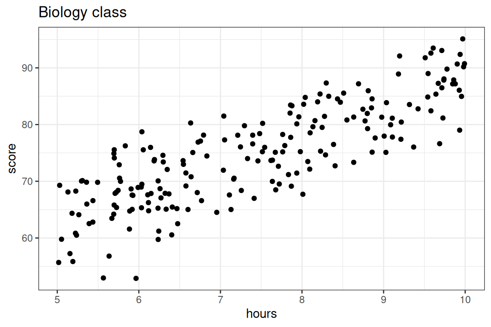

Overfitting
Training sets and testing sets
The Ideas in Code
Let’s shift the subject to mathematics to biology, and illustrate the training and testing approaching to evaluating predictions for the exam scores from a biology class with 200 students using as a predictor the number of hours that they have studied. Let’s visualize these data first.
Here we are going to compare two models: a simple linear model versus a 5th degree polynomial, both fit using the method of least squares.
- \(\textbf{Model 1:} \quad \widehat{score} = b_0 + b_1 \times hours\)
- \(\textbf{Model 2:} \quad \widehat{score} = b_0 + b_1 \times hours + b_2 \times hours^2 + b_3 \times hours^3 + b_4 \times hours^4 + b_5 \times hours^5\)
Step 1: Split data
We’ll use an 80-20 split of the sample, with each observation assigned to its set randomly. There are many ways to do this via code: here is one!
First, let’s shuffle the rows of our data frame at random. One way we can think about this is putting all of our rows in a hat and picking them out, one by one. In other words, we sample without replacement from our data frame, and our sample size is the number of rows in our data frame! We can bring this idea to life using a function in
dplyrcalledslice_sample(). Thenrow()argument allows us to get the exact number of rows no matter our data frame, so we won’t have to look to find that number each time.One other thing we’ll want to make sure to do is set our seed, so that our collaborators, or anyone else who wants to analyze our work, get the same split that we do.
set.seed(20)
shuffled_biology <- slice_sample(biology,
replace = FALSE,
n = nrow(biology))- Now that we have things mixed up, we can take the first 80 percent of our rows as training rows and the next 20 percent as testing rows. To do this, we’ll first make a vector containing position 1 all the way up to the row where we’ve reached 80 percent of the rows in the
biologydata frame. We can use our old friend,seq(), to help!
train_rows <- seq(from = 1,
to = nrow(shuffled_biology)* 0.8,
by = 1) Now, we can use a function in
dplyrcalledslice()to get our training and testing frame from ourshuffled_biologydata frame.slice()extracts rows from a data frame based on their position, and we can extract multiple rows using a vector which contains each of their positions. That’s exactly the kind of vector thattrain_rowsis!A very useful piece of syntax: if we write
-train_rows,slice()will know to focus all of the position numbers that weren’t in thetrain_rowsvector.
biology_train <- slice(shuffled_biology, train_rows)
biology_test <- slice(shuffled_biology, -train_rows)Step 2: Fit the model to the training set
Now, we’ll fit two models on the training data. We will be using lm(), and for both models, the data argument is given by biology_train.
lm_slr <- lm(score ~ hours, data = biology_train)
lm_poly <- lm(score ~ poly(hours, degree = 20, raw = T),
data = biology_train)We can evaluate the \(R^2\)’s for both models’ performance on the training data just like before with glance(). Which model do you expect to have a better training set \(R^2\) value?
library(broom)
glance(lm_slr) %>%
select(r.squared)# A tibble: 1 × 1
r.squared
<dbl>
1 0.693glance(lm_poly) %>%
select(r.squared)# A tibble: 1 × 1
r.squared
<dbl>
1 0.715Just as we might have guessed from looking at the model fits, the polynomial model has a better \(R^2\) value when evaluated on the training set.
Step 3: Evaluate the model on the testing set.
The real test of predictive power between the two models comes now, when we will make exam score predictions using the testing set: data which the model was not used to fit and hasn’t seen.
We will still be using the predict() function for this purpose. Now, we can just plug biology_test into the newdata argument!
score_pred_linear <- predict(lm_slr, newdata = biology_test)
score_pred_poly <- predict(lm_poly, newdata = biology_test)Once these predictions \(\hat{y}_i\) are made, we then can use dplyr code to:
- mutate on the predictions to our testing data
- set up the \(R^2\) formula and calculate1. In the code below, we are using the formula
\[R^2 = 1-\frac{\text{RSS}}{\text{TSS}} = 1-\frac{\sum_{i=1}^n(y_i-\hat{y_i})^2}{\sum_{i=1}^n(y_i-\bar{y})^2}\]
- We can also calculate \(\text{MSE}\) and \(\text{RMSE}\) as \(\frac{1}{n}\text{RSS}\) and \(\sqrt{\frac{1}{n}\text{RSS}}\), respectively.
biology_test %>%
mutate(score_pred_linear = score_pred_linear,
score_pred_poly = score_pred_poly,
resid_sq_linear = (score - score_pred_linear)^2, # compute the residuals for linear model
resid_sq_poly = (score - score_pred_poly)^2) %>% # compute the residuals for poly model
summarize(TSS = sum((score - mean(score))^2), # compute TSS
RSS_linear = sum(resid_sq_linear), # compute RSS for the linear model
RSS_poly = sum(resid_sq_poly), # compute RSS for the polynomial model
n = n()) %>%
mutate(Rsq_linear = 1 - RSS_linear/TSS, # compute Rsq, MSE, RMSE for each model
Rsq_poly = 1 - RSS_poly/TSS,
MSE_linear = RSS_linear/n,
MSE_poly = RSS_poly/n,
RMSE_linear = sqrt(MSE_linear),
RMSE_poly = sqrt(MSE_poly)) |>
select(Rsq_linear, Rsq_poly, MSE_linear, MSE_poly)# A tibble: 1 × 4
Rsq_linear Rsq_poly MSE_linear MSE_poly
<dbl> <dbl> <dbl> <dbl>
1 0.664 0.629 26.6 29.3Voila! The linear model’s test set \(R^2\) is better than the polynomial model’s test \(R^2\)! We also see the \(\text{MSE}\) for the linear model is lower than that for the polynomial model.
So which is the better predictive model: Model 1 or Model 2? In terms of training, Model 2 came out of top, but Model 1 won out in testing.
Again, while training \(R^2\) can tell us how well a predictive model explains the structure in the data set upon which it was trained, it is deceptive to use as a metric of true predictive accuracy. The task of prediction is fundamentally one applied to unseen data, so testing \(R^2\) is the appropriate metric. Model 1, the simpler model, is the better predictive model. After all, the data we are using looks much better modeled by a line than a five degree polynomial.
Summary
This lecture is about overfitting: what happens when your model takes the particular data set it was built on too seriously. The more complex a model is, the more prone to overfitting it is. Polynomial models are able to create very complex functions thus high-degree polynomial models can easily overfit. Fitting a model and evaluating it on the same data set can be problematic; if the model is overfitted the evaluation metric (e.g. \(R^2\)) might be very good, but the model might be lousy on predictions on new data.
A better way to approach predictive modeling is to fit the model to a training set then evaluate it with a separate testing set.
Footnotes
Because \(\hat{y}_i\) involve information from the training data and \(y_i\) and \(\bar{y}\) come from the testing data, the decomposition of the sum of squares does not work. So, we cannot interpret testing \(R^2\) as we would training \(R^2\), and you may have a testing \(R^2\) less than 0. However, higher \(R^2\) values still signal that the model has good predictive power.↩︎